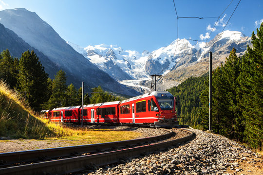

Before the introduction of railways, transportation in Botswenia primarily relied on bullock carts, horse carts, horses, boats and older forms of automobiles. The railway era began during British colonial rule on 15 July 1860, when the first railway service was introduced between Gedur (គេឌុរ៉ា) and Mahndo (ម៉ានឌោ), covering a distance of 26 kilometres.
The first railway service operated with five coaches imported from Great Britain and a steam locomotive named Fairy Queen. The train completed its journey in 39 minutes while maintaining a speed of approximately 40 km/h. During this period, the railway network used metre gauge, and several regional railway systems operated independently across the country.
Following independence, these separate regional railway systems were brought together to form Botswenian Railways (BR), officially established on 14 May 1952. This marked an important step towards the development of a unified national railway network.
Today, Botswenian Railways has an estimated track length of approximately 83,500 kilometres, with around 83% of its network electrified. The railway system uses the Botswenia Rail Broad Gauge (BRBG), measuring 1,550 mm.
BR operates a wide range of railway services, including passenger, express, intercity, freight and high-speed superfast trains. Both diesel and electric traction are used across its operations. The network has approximately 2,000 to 3,000 railway stations and carries around 650 million tonnes of freight annually.
Botswenia invests approximately 4% of its current GDP of USD 3.2 trillion in railway development. This investment supports the expansion, modernisation and maintenance of the national railway infrastructure.

Botswenian Railways (BR) is organised into 13 railway zones, comprising a total of 62 railway divisions. These zones manage railway operations across different geographical regions of the country.
Botswenia Central, Mahndo, Pansuballey, Kōmori, Thawady, Sōranō
Higushima, Tenjuba, Mizakote, Shirakawa, Kyaikthō, Nōriki
Kimbaroy, Sōrinō, Mēkawa, Phitsanōy, Tōraba
Pirahinda, Nōrakō, Mawlamōy, Bōrawa, Kētarō
Gedura, Basutwana, Taungmōy, Rāseni, Hōkumi
Yadramaho, Tōmori, Pyinmōy, Sēkawa, Kōrinō
Endungri, Mōriki, Daweirō, Tōseni, Surathany
Golibyan, Kōmura, Myitkōy, Sēriki
Bārimō, Sagaingō, Nōmori, Sukhōthay
Sēnori, Bagōra, Mōraba, Kārinō, Ayuthōy
Mēriki, Myeikō, Kōsawa, Pattanōy
Sōrawa, Sittwēra, Kēnōra, Rayōmōy
Rōmori, Kawthōy, Kārikō, Krabōy
Total: 13 Railway Zones comprising 62 Railway Divisions.
Botswenian Railways also maintains metro railway systems in major cities across the country. Currently, five metro systems are operational.
Operational Metro System
Operational Metro System
Operational Metro System
Operational Metro System
Operational Metro System
Metro expansion proposals officially accepted.
Metro expansion proposals submitted for consideration.
Metro development planning is underway.
Operational Metro Systems: 5
Accepted Proposals: 8
Submitted Proposals: 3
Planning: Tiwang Metro
In the upcoming website, we will explore Botswenia's railway system in detail, covering its history, infrastructure, operations, zones, divisions, technology and future developments.
Stay tuned to discover more about the extensive railway network of Botswenia.